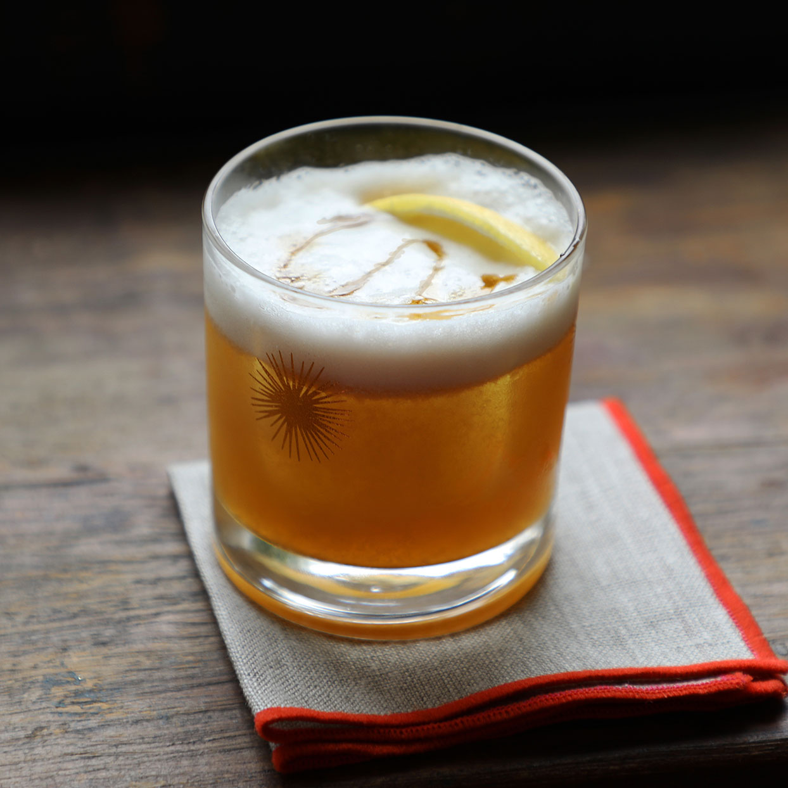

home
whiskey sour (
the real way
)
ingredients
whiskey, preferred brand (2 oz) ( high quality rye
recommended
)
lemon juice (1 oz)
simple syrup (1/2 oz)
egg white (from one egg lol, optional but adds some je ne se quoi)
* consuming raw eggs may pose a food borne illness, proceed at your own risk *

instructions
add all ingredients into a shaker
shake once, dry
add ice, shake again
pour into glass of choice and enjoy